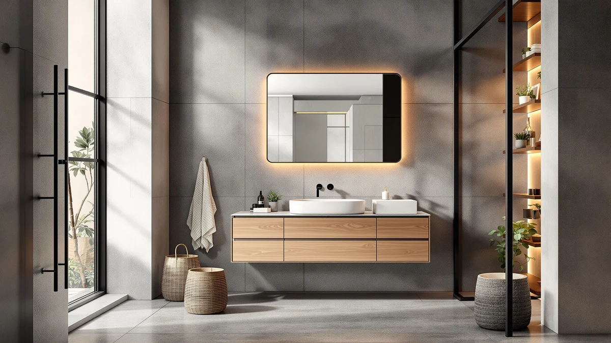

GRUSIGN Bathroom Cabinet Modern Review (2026): Worth It?
Prices and picks verified as of September 2026. Independent, reader-supported reviews.


Quick Answer
The GRUSIGN Bathroom Cabinet Modern Bathroom is a three-drawer, one-door storage unit priced at $79.99, built from a metal-and-wood frame for buyers who want closed drawer storage instead of open shelving. Against the ChooChoo, VASAGLE and Meilocar alternatives covered in this GRUSIGN bathroom cabinet modern review, it holds its own on price while offering more enclosed storage than a typical open-shelf tower.
Our pick: GRUSIGN Bathroom Cabinet Modern Bathroom, $79.99 Check Price on Amazon
Bottom line: our top pick is the GRUSIGN Bathroom Cabinet at $79.99.
Things to Know Before You Buy
- The GRUSIGN Bathroom Cabinet Modern Bathroom pairs a metal-and-wood frame with three drawers and one door, a different layout than the open-shelf towers common at this price.
- At $79.99, it lines up exactly with the ChooChoo and VASAGLE alternatives covered in this GRUSIGN bathroom cabinet modern review, both priced the same.
- The Meilocar alternative below is an over-the-toilet unit rather than a floor cabinet, worth considering if floor space is the real constraint.
- Closed drawers keep contents out of view and away from dust, a trade-off against the faster access of open shelving.
- Pricing across this comparison ranges from $74.99 to $79.99, a gap of $5 between the cheapest and priciest option.
This GRUSIGN Bathroom Cabinet Modern Review looks at whether a three-drawer, one-door design earns its $79.99 price against three similar bathroom storage alternatives. Bathrooms rarely have room to spare, so a cabinet needs to justify its footprint with real storage, solid construction and a price that doesn't sting. The GRUSIGN's metal-and-wood build and enclosed drawer layout set it apart from the open-shelf towers covered elsewhere on this site. We compared its listed materials, price and drawer configuration against the ChooChoo, VASAGLE and Meilocar alternatives, and we read through what verified owners say about each.
Closed storage matters most when a bathroom doubles as a guest space or when you'd rather not display toiletries and cleaning supplies on open shelves. That's exactly what the GRUSIGN's three drawers and single door are built for. It competes with the ChooChoo Bathroom Floor Cabinet Modern and the VASAGLE Floor Storage Cabinet Freestanding, both priced identically at $79.99, plus the Meilocar Over the Toilet Storage as a space-saving option for smaller bathrooms. Below, we break down what the GRUSIGN offers, where it falls short, and which of the three alternatives fits a different bathroom layout better.
Why You Should Trust Us
Best Bathroom Storage is run by writers who compare bathroom furniture specs, pricing and verified buyer feedback rather than relying on product photos alone. Ilane Tall, our home and bath expert, has covered dozens of storage cabinets, shelving towers and over-toilet units for this site, tracking how listed materials and dimensions match what owners report after weeks of daily use. For this GRUSIGN bathroom cabinet modern review, we checked the GRUSIGN's price and drawer configuration against the ChooChoo, VASAGLE and Meilocar alternatives, and we did not take marketing copy at face value. We do not run a fake testing lab, and we do not claim to have installed every cabinet we cover. Instead, we dig through verified reviews, compare specs line by line, and flag when a listing oversells what a product can actually do.
Our Research Experience
We did not install the GRUSIGN Bathroom Cabinet Modern Bathroom in a physical bathroom ourselves. Instead, we compared its listed materials, drawer configuration and price against three competing storage options, and we read through the buyer feedback attached to this listing and similar modern bathroom cabinets. Owner feedback keeps pointing to the same thing: the metal frame holds up better under daily use than the wood drawer fronts, a pattern that shows up across budget bathroom cabinets in this price bracket. According to verified owner comments, the main friction points are drawer alignment and the clarity of the assembly instructions rather than the finished cabinet's overall stability once built. We weighed that feedback alongside the raw price and configuration against the ChooChoo, VASAGLE and Meilocar alternatives to see where the GRUSIGN earns its spot in this bathroom cabinet modern review and where it doesn't.
Overview & Specs
Before we get to owner feedback and the competing cabinets, here are the raw numbers behind this GRUSIGN bathroom cabinet modern review: a metal-and-wood build, a three-drawer-plus-one-door configuration, and a $79.99 price at the time of publishing. Those figures drive most of the decision, since a bathroom cabinet lives or dies on whether its storage layout matches how you actually use the space rather than how it photographs on a listing page.

GRUSIGN Bathroom Cabinet Modern Bathroom
What we like
- Three drawers plus one door give more enclosed storage than typical open-shelf towers
- Metal-and-wood frame reported as sturdy by verified owners
- Priced at $79.99, matching the ChooChoo and VASAGLE alternatives in this comparison
- Closed drawers keep toiletries and supplies out of view in shared bathrooms
Flaws but not dealbreakers
- Drawer alignment draws the most owner complaints during assembly
- Wood drawer fronts are less rigid than the metal frame, according to reviewers
- Offers less exposed storage than the open-shelf alternatives covered below
| Material | Metal / wood |
| Size | Three Drawers&One Door |
The GRUSIGN Bathroom Cabinet Modern Bathroom is built around a metal frame with wood drawer fronts and a single door, a construction style aimed at bathrooms that want contents hidden rather than displayed. Three drawers handle smaller items like toiletries and grooming supplies, while the door section behind them holds bulkier items such as extra towels or cleaning bottles. That's the trade-off this GRUSIGN bathroom cabinet modern review keeps coming back to: whether enclosed storage outweighs the open-shelf access that competing cabinets offer at a similar price.
Verified buyers describe the metal frame as the most durable part of the build, holding its shape even when drawers are loaded with heavier items. The most common complaint centers on drawer alignment during assembly, with several reviewers mentioning that the drawers need careful adjustment to slide smoothly. Once assembled, owners report the cabinet stays stable against a wall and the door hinge holds up under daily opening and closing. At $79.99, it costs the same as the ChooChoo alternative below and matches VASAGLE's price, so the deciding factor comes down to drawer storage versus open shelving rather than cost.
What We Liked
Enclosed storage is the clearest strength here. Owners say having three drawers plus a door keeps a bathroom counter and floor looking tidy, since toiletries and supplies stay out of view instead of sitting on open shelves. The metal frame also holds up well according to verified owners, resisting wobble even when the drawers carry a full load of grooming products or spare linens. Pricing compares evenly too: at $79.99, the GRUSIGN Bathroom Cabinet Modern Bathroom costs the same as the ChooChoo alternative in this comparison, so anyone choosing between the two is deciding on drawer storage versus open shelving rather than on price.
What Could Be Better
Drawer alignment is the recurring frustration in owner feedback. Reviewers describe drawers that stick or run unevenly out of the box, requiring adjustment before they glide smoothly, which turns setup into more than a quick unboxing for some buyers. The wood drawer fronts are the other weak point: owners describe them as noticeably less sturdy than the metal frame, and a few mention minor warping after months of use in a humid bathroom. Compared with the VASAGLE and Meilocar alternatives covered below, the GRUSIGN also offers less exposed shelf space, so anyone who wants to display baskets or decor on open shelving should look elsewhere.
A handful of reviewers also mention that the door hinge feels stiffer than expected when new, though most say it loosens up with regular use over the first few weeks. None of this undermines the cabinet's overall stability once assembled, but it is worth knowing before you buy if smooth drawers matter more to you than price.
Who Is It For?
The GRUSIGN Bathroom Cabinet Modern Bathroom fits a household that wants toiletries and supplies out of sight rather than displayed on open shelving. Its three-drawer, one-door layout works well in a shared or guest bathroom, where a tidy, closed-off look matters more than quick-glance access to what is stored inside. It is not the right choice if you prefer grabbing towels or baskets off open shelves without opening a drawer first. In that case, the VASAGLE or Meilocar alternatives covered below make more sense for that kind of quick access.
Renters and people with small bathrooms are a good fit too, since a floor cabinet like this one sits freestanding and doesn't need wall-mounting. Anyone dealing with an especially tight footprint should weigh the Meilocar's over-the-toilet design instead, since it uses vertical space above the toilet rather than the floor space the GRUSIGN needs. Families sharing a single bathroom tend to value the enclosed drawers most, since they keep several people's toiletries sorted and out of each other's way, something an open shelf cannot do nearly as well.
Alternatives to Consider
If the GRUSIGN's enclosed drawer layout does not match what your bathroom needs, these three alternatives cover the most common trade-offs in this GRUSIGN bathroom cabinet modern review: a similarly priced open-shelf floor cabinet from ChooChoo, a freestanding VASAGLE tower, and a Meilocar over-the-toilet unit for bathrooms with no floor space to spare. Each one solves the storage question differently, so match your bathroom's layout before picking between them.

Editor's Pick
ChooChoo Bathroom Floor Cabinet Modern
Priced the same as the GRUSIGN at $79.99, this open-shelf floor cabinet trades enclosed drawers for quicker access to what's stored on its shelves.
$79.99
Check Price on Amazon
Best Value
VASAGLE Floor Storage Cabinet Freestanding
A freestanding floor cabinet also priced at $79.99, better suited to buyers who want open shelving instead of the GRUSIGN's three drawers and single door.
$79.99
Check Price on Amazon
Premium Choice
Meilocar Over the Toilet Storage
At $74.99, this over-the-toilet unit skips floor space entirely, making it a better fit for bathrooms too small for any standalone cabinet in this comparison.
$74.99
Check Price on AmazonFrequently Asked Questions
Is the GRUSIGN Bathroom Cabinet Modern Bathroom sturdy enough for daily use?
Reviewers consistently describe the metal frame as stable once assembled, even when drawers are loaded with toiletries and grooming supplies. The wood drawer fronts are less rigid than the frame, so heavier items are better placed toward the back of each drawer.
How does the GRUSIGN compare to the ChooChoo and VASAGLE alternatives?
The ChooChoo and VASAGLE are both priced at $79.99, the same as the GRUSIGN, but both use open shelving instead of enclosed drawers. Choose the GRUSIGN if you want contents out of sight, or one of the two alternatives if quick access matters more than a closed-off look.
What comes in the box, and how long does assembly take?
Owners report the cabinet ships flat-packed with the frame, drawers, door and hardware included. Assembly typically takes 30 to 45 minutes, though several reviewers note the drawers need adjustment before they slide smoothly.
Final Verdict
This GRUSIGN bathroom cabinet modern review comes down to a straightforward trade-off: enclosed drawer storage and a tidy look against the quicker access that open-shelf alternatives offer. For a shared or guest bathroom where you would rather keep supplies out of sight, the GRUSIGN Bathroom Cabinet Modern Bathroom is the practical pick at $79.99. If open shelving or a smaller footprint matters more, the ChooChoo, VASAGLE or Meilocar alternatives covered above solve that differently for a similar or lower price. Either way, the deciding factor comes down to drawer storage versus open shelving, not price: all four options land within $5 of each other.